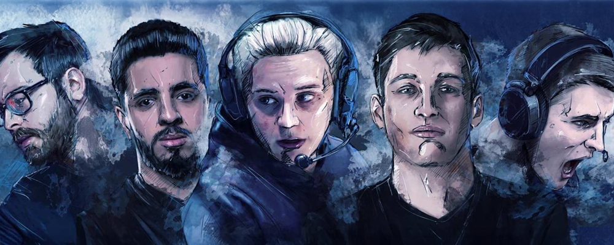
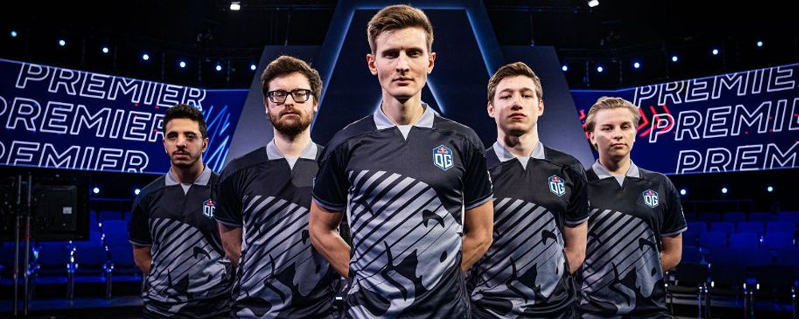
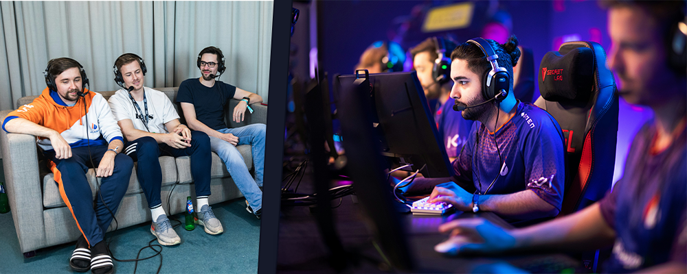
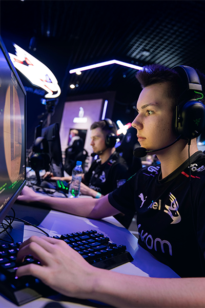
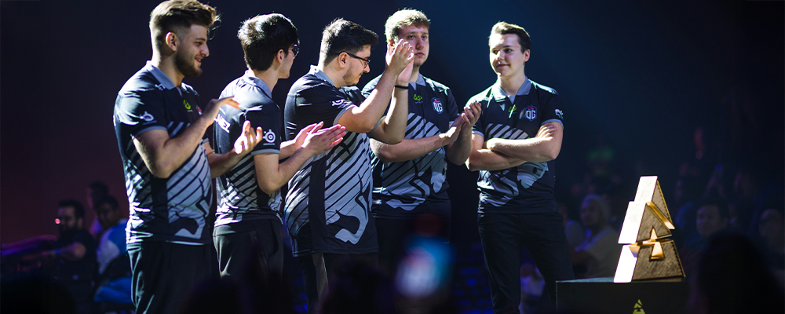
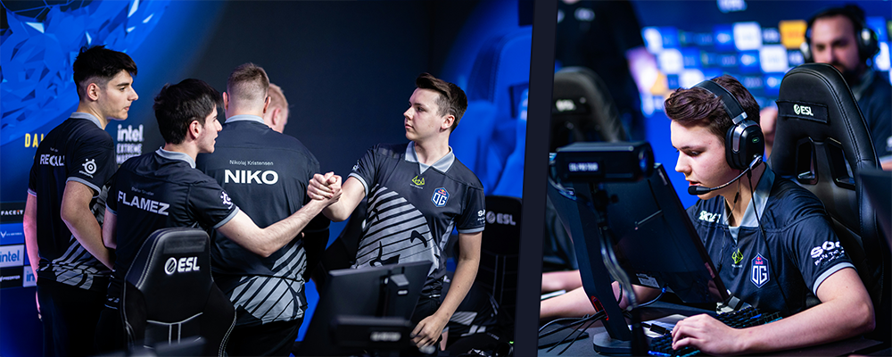
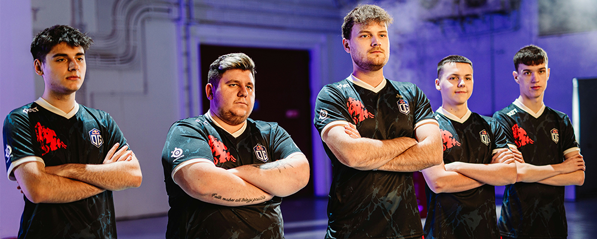
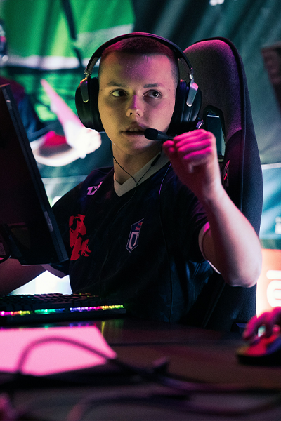
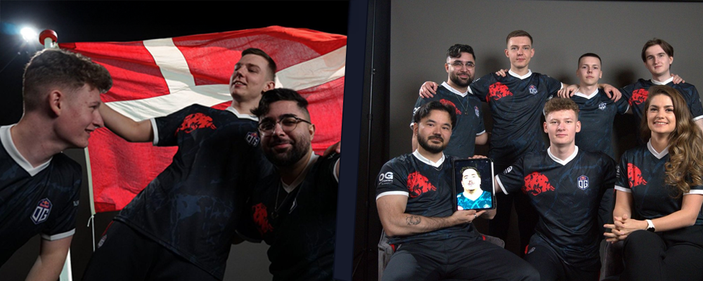

History Of OG Counter-Strike Team
2019

OG entered Counter-Strike: Global Offensive very late in 2019. On Dec. 4, 2019, OG announced its new CS:GO roster: veterans Nathan “NBK-” Schmitt (France) and Aleksi “Aleksib” Virolainen (Finland) alongside Valdemar “valde” Bjørn Vangså (Denmark), Issa “ISSAA” Murad (Jordan) and Mateusz “mantuu” Wilczewski (Poland).
This marked OG's official launch into the CS scene, and the team prepared to compete regionally. There were no major tournament results that year (the team was formed too late for the 2019 circuit), but the announcement signaled OG's serious ambition in CS. By year's end the core roster and staff were in place, laying groundwork for 2020.
2020

OG's inaugural season proved to be a wild ride of roster tweaks and surprising early success. In January 2020 OG signed Danish coach Casper “ruggah” Due, reuniting him with countryman valde. On the competitive side, OG quickly adjusted its lineup: veteran NBK- was benched in late Feb and ISSAA in mid-Mar, and in their place OG added rising players Nikolaj “niko” Kristensen (Denmark) on Mar. 17 and Shahar “flameZ” Shushan (Israel) on Apr 9. Aleksib, valde and mantuu all extended their deals into 2022, suggesting OG's intent to build stability.
Despite the instability, OG stunned many by finishing the year strong. Their biggest result was runner-up at Flashpoint Season 2 (an S-tier online league with a $250K prize pool) in Dec 2020, losing narrowly 1-2 to Virtus.pro in the final. OG also took a top-three finish in the BLAST Premier Fall 2020 season (an S-tier BLAST group stage event, ~$25K for third place). These performances helped OG break into the global Top10 by year's end. However, 2020 also brought adversity: coach ruggah was implicated in the ESL “coach bug” scandal for a 2016 incident and received a 3.75-month ban. OG publicly supported him, but he was sidelined for much of the flashpoint playoffs. In sum, OG's first full year saw them rapidly build team synergy (leveraging new talent) while navigating pandemic-era online play. The payoff was clear: OG finished 2020 ranked #7 in the world, a promising debut despite the off-server turbulence.
2021

Building on its 2020 momentum, OG made decisive roster moves in early 2021. On Jan. 23, 2021 OG traded IGL Aleksib to G2 Esports in exchange for Nemanja “nexa” Isaković, bringing in Serbia's Igor “kakafu” Milic as an assistant coach. The new lineup for early 2021 thus included nexa as in-game leader, plus valde, mantuu, niko and flameZ. (Coach kakafu worked under ruggah at North.) In the late spring, OG again retooled: valde was benched by mutual agreement (May 11) and niko on May 25 . To replace them, OG signed Czech talent Adam “NEOFRAG” Zouhar and Polish rookie Maciej “F1KU” Miklas on May 27. In July OG benched mantuu and brought in Russian prodigy Abdulkhalik “degster” Gasanov . The result was a youthful core: IGL nexa, riflers flameZ and degster, and sharpshooters NEOFRAG and F1KU (with mantuu shifting to a reserve role).
This rebuilt lineup immediately delivered results. In June 2021 OG captured its first championship, winning the Sweet Spring #2 online tournament (an A-tier ESL event) with a 2-1 victory over BIG, for a ~$40K top prize. Just days later, OG advanced to the finals of IEM Summer 2021 (the ESL Intel Extreme Masters in Copenhagen, S-tier) but lost 0-3 to Gambit Esports, taking $42K as runners-up. These high finishes on significant stages signaled OG's arrival among the upper echelon. OG ended the year as a top-10 team, though it narrowly missed qualifying for the PGL Major Stockholm 2021. The 2021 season was thus marked by OG finding its groove: bold roster swaps led to immediate S-tier success, and the new five-man core proved it could beat major opponents, even as OG continued to search for long-term stability.

2022

This rebuilt lineup immediately delivered results. In June 2021 OG captured its first championship, winning the Sweet Spring #2 online tournament (an A-tier ESL event) with a 2-1 victory over BIG, for a ~$40K top prize. Just days later, OG advanced to the finals of IEM Summer 2021 (the ESL Intel Extreme Masters in Copenhagen, S-tier) but lost 0-3 to Gambit Esports, taking $42K as runners-up. These high finishes on significant stages signaled OG's arrival among the upper echelon. OG ended the year as a top-10 team, though it narrowly missed qualifying for the PGL Major Stockholm 2021. The 2021 season was thus marked by OG finding its groove: bold roster swaps led to immediate S-tier success, and the new five-man core proved it could beat major opponents, even as OG continued to search for long-term stability.
OG's tournament results in 2022 were highlighted by its strong BLAST Premier showings. The team reached the BLAST Premier Spring Finals in London (third-fourth place, taking $40K) and again the Fall Finals in Copenhagen (also a semi-final finish, beating Astralis in groups for a ~$27.5K prize) . These finishes qualified OG for the BLAST World Final 2022 in Dubai, where they ultimately placed joint 3rd-4th for $85K . Earlier, OG had won an online BLAST Spring Groups event (an S-tier tournament) over Ninjas in Pyjamas . OG also defeated MIBR in a Teleperformance PXP Invitational showmatch (for roughly $32K). These results underscored OG's consistency: the team was a regular semi-finalist in Tier-1 events by late 2022. The year's main disappointment was not qualifying for the PGL Major Antwerp 2022. Still, OG's performance in BLAST and other premier leagues made 2022 their most stable and successful campaign to date. By year-end, OG was firmly recognized as a top-12 team, having dispatched several Tier-1 opponents along the way.
2023

The year 2023 proved to be a challenging transition for OG. After months of middling results, OG once again shook up its roster. In June 2023 the organization announced another rebuild “around a core of F1KU, nexa and regali”. This left OG with the five of nexa, F1KU, regali, k1to and FASHR in mid-2023 (with Lambert now head coach). However, stability remained elusive. In November OG benched FASHR and then lost captain nexa to G2 Esports. They brought in Belgian talent Bram “Nexius” Campana in December 2023, but throughout 2023 OG struggled to find synergy.
On the competition front, OG's results were largely modest. They played in BLAST Premier Spring 2023 (an S-tier Copenhagen online event) but only reached the Spring Showdown bracket. There were no S-tier titles or finals that year, and OG did not qualify for the Paris Major 2023. Instead, much of OG's time went into online leagues and qualifiers. This “reset” year laid bare the need for stability: by Dec 2023 only F1KU remained from OG's original five, and the team was rebuilding around new talent. Meanwhile the wider CS scene shifted — in March Valve announced Counter-Strike 2, a Source 2-engine upgrade slated for summer 2023. OG, like all teams, was now preparing for that change. 2023 stands as a year of upheaval: OG had some glimpses of promise with the nexa-led core, but ultimately saw more departures than successes, setting the stage for a fresh start in CS2.
2024

With Counter-Strike 2 in beta, OG came into 2024 still chasing consistency. Early in the year OG signed Israeli sniper HeavyGod (Nikita Martynenko) from Endpoint on Jan 4, and in April promoted Lambert to full head coach while parting with regali (Apr 8). May saw further turnover: OG transferred regali to Entropiq (May 1) and sawjoin Heroic (May 12). That same month OG recruited Romanian rifler Mădălin-Andrei “MoDo” Mirea (ex-TSM). In July 2024 HeavyGod departed for Cloud9, and in August OG acquired Danish rifler Christoffer “Chr1zN” Storgaard. Danish AWPer k1to was benched on Aug 8 (later released), and in September OG added veteran Christian “Buzz” Andersen from Entropiq. By year's end the active lineup was F1KU, Chr1zN, Buzz (with MoDo inactive), coached by Lambert and assistant John “k0nfig” Dahl (killazoo). These moves reflected OG's attempt to blend established leaders (F1KU) with promising vets.
Competitive results in 2024 were limited but showed OG could compete in CS2. OG's best finish was second place at the April 2024 Skyesports Masters (a CS2 A-tier online event with a $250K pool, losing 1-3 to Aurora Gaming), netting $70K. Aside from that, OG's new roster was still finding its footing. The global CS2 calendar featured LAN S-tier events (like the Rio Major in June 2024), but OG did not make a significant impact in those during 2024. The year was largely about integrating new players and adapting to the new engine. By year-end OG had stopped benching its core (k1to and Nexius were released), and it looked toward 2025 with a five-man roster: F1KU, Chr1zN, Buzz, plus newcomers.

2025

In 2025 OG entered the first full-year era of Counter-Strike 2 with a stabilized roster. January saw OG sign Swedish rifler Olle “spooke” Grundström ; in April they added French AWPer Nico “nicoodoz” Tamjidi to complete the five. The lineup now consists of F1KU, Chr1zN, Buzz, spooke, nicoodoz (with Lambert as head coach). Earlier lineup member MoDo was made inactive in Feb 2025. On the performance side, OG took a key step forward: in April 2025 they qualified for the BLAST.tv Austin Major 2025 (the first CS2 Major) by winning the European RMR bracket. OG defeated teams including Astralis (13-8) and 9Pandas (13-9) in the European qualifier. This historic qualification guarantees OG a spot at the June 2025 Major in Austin - a major milestone for the organization.
Beyond that, 2025 has mostly been about OG honing its new roster in online leagues and RMR play. The team has yet to add a Tier-1 trophy, but qualifying for the Major is a breakthrough. In the broader CS scene, teams are now fully in the CS2 era (new weapon balance, smokes, tick rates, etc.); OG is focusing on in-game tactics and chemistry under Lambert's guidance. The international five-man lineup (Polish, Danish, Swedish, French players) reflects the modern CS2 trend of cross-border rosters. As of mid-2025, OG is poised to compete at the highest level, their eyes on earning prize money and prestige at the upcoming Austin Major.